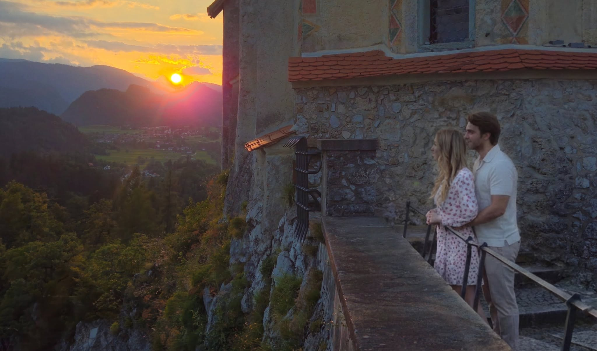

<title>Kristoffer og Synne</title>
<meta name="description" content="Praktisk informasjon til bryllupet ved Bled Castle i Slovenia, 17. juli 2027.">
<link rel="preconnect" href="https://fonts.googleapis.com">
<link rel="preconnect" href="https://fonts.gstatic.com" crossorigin>
<link rel="stylesheet" href="https://fonts.googleapis.com/css2?family=Cormorant+Garamond:ital,wght@0,300;0,400;0,500;0,600;1,300;1,400&family=Parisienne&display=swap">
<style>
/* ---------------------------------------------------------------
   Paletten er hentet fra den trykte invitasjonen:
   kremfarget papir, akvarell-eukalyptus, mørk skoggrønn tekst.
   --------------------------------------------------------------- */
:root{
  --paper:#ECEAE2;
  --card:#F5F4EE;
  --ink:#2C3A2C;
  --ink-soft:#556150;
  --sage:#8BA585;
  --sage-deep:#4E6B4C;
  --line:#C6D1BF;
  --leaf-a:#9DB99A;
  --pending:#96814F;
  --band:#4E6B4C;
  --band-ink:#EDF1EA;
  --band-soft:#CBDAC6;
  --band-line:#7E9C79;
  --serif:"Cormorant Garamond",Georgia,"Times New Roman",serif;
  --script:"Parisienne","Snell Roundhand","Apple Chancery",cursive;
}
@media (prefers-color-scheme:dark){
  :root:not([data-theme="light"]){
    --paper:#1A211A;
    --card:#232B22;
    --ink:#E2E8DD;
    --ink-soft:#A8B5A3;
    --sage:#8BA585;
    --sage-deep:#A8C4A3;
    --line:#38452F;
    --leaf-a:#4A6349;
    --pending:#C2A96C;
    --band:#232B22;
    --band-ink:#E2E8DD;
    --band-soft:#A8B5A3;
    --band-line:#4A6349;
  }
}
:root[data-theme="dark"]{
  --paper:#1A211A;
  --card:#232B22;
  --ink:#E2E8DD;
  --ink-soft:#A8B5A3;
  --sage:#8BA585;
  --sage-deep:#A8C4A3;
  --line:#38452F;
  --leaf-a:#4A6349;
  --pending:#C2A96C;
  --band:#232B22;
  --band-ink:#E2E8DD;
  --band-soft:#A8B5A3;
  --band-line:#4A6349;
}

*{box-sizing:border-box}
html{scroll-behavior:smooth}
body{
  margin:0;
  background:var(--paper);
  color:var(--ink);
  font-family:var(--serif);
  font-size:19px;
  line-height:1.75;
  -webkit-font-smoothing:antialiased;
}
@media (prefers-reduced-motion:reduce){
  html{scroll-behavior:auto}
}
a{color:var(--sage-deep)}
a:focus-visible,summary:focus-visible{outline:2px solid var(--sage);outline-offset:3px}
.wrap{max-width:660px;margin:0 auto;padding:0 26px}

/* ---------- hero ---------- */
.hero{text-align:center;padding:0 0 50px}
.leaf-a{fill:var(--leaf-a)}
.stem{stroke:var(--sage);fill:none}

/* Panoramaet toner ned i papirfargen nederst, i begge temaer.
   Gradienten bak bildet er en fallback, sa toppen holder seg hel
   ogsa hvis bildefilen mangler. */
.panorama{
  position:relative;margin:0 0 34px;overflow:hidden;
  height:clamp(230px,44vh,440px);
  background:linear-gradient(180deg,#46516b 0%,#8d6a52 46%,#d69a58 70%,var(--paper) 100%);
}
.panorama img{width:100%;height:100%;display:block;object-fit:cover;object-position:58% center}
.panorama::after{
  content:"";position:absolute;inset:auto 0 0 0;height:34%;pointer-events:none;
  background:linear-gradient(to bottom,transparent,var(--paper));
}
@media (min-width:780px){
  .panorama{height:clamp(330px,52vh,540px)}
  .panorama img{object-position:50% center}
}
.eyebrow{
  margin:0 0 4px;font-size:.76rem;letter-spacing:.34em;
  text-transform:uppercase;color:var(--ink-soft);
}
.names{
  font-family:var(--script);font-weight:400;
  font-size:clamp(3rem,12.5vw,5rem);line-height:1.06;
  color:var(--sage-deep);margin:0 0 20px;text-wrap:balance;
}
.hero-date{
  margin:0 0 16px;font-weight:300;
  font-size:clamp(1.45rem,6.6vw,2.35rem);letter-spacing:.2em;color:var(--ink);
}
.hero-date i{font-style:normal;color:var(--line);margin:0 .1em}
.hero-meta{margin:0;font-size:.82rem;letter-spacing:.26em;text-transform:uppercase;color:var(--ink-soft)}
.hero-meta b{display:block;font-weight:500;margin-top:5px;color:var(--ink)}

.count{display:flex;justify-content:center;gap:28px;margin:32px 0 0;padding:0;list-style:none}
.count .n{display:block;font-size:1.85rem;line-height:1;color:var(--sage-deep);font-variant-numeric:tabular-nums}
.count .l{display:block;margin-top:7px;font-size:.6rem;letter-spacing:.22em;text-transform:uppercase;color:var(--ink-soft)}

/* ---------- nav ---------- */
/* Menyen brytes over flere linjer i stedet for a scrolle sidelengs.
   Sentrert scrolling gjor forste og siste punkt uleselige pa mobil. */
nav{
  background:var(--paper);
  border-top:1px solid var(--line);border-bottom:1px solid var(--line);
}
nav ul{
  display:flex;flex-wrap:wrap;justify-content:center;
  list-style:none;margin:0;padding:6px 12px;
}
nav a{
  display:block;padding:8px 13px;white-space:nowrap;text-decoration:none;
  color:var(--ink-soft);font-size:.68rem;letter-spacing:.19em;text-transform:uppercase;
}
nav a:hover{color:var(--sage-deep)}
@media (min-width:780px){
  nav{position:sticky;top:0;z-index:10}
  nav ul{flex-wrap:nowrap;padding:0}
  nav a{padding:13px 15px;font-size:.7rem}
}

/* ---------- seksjoner ---------- */
section{padding:50px 0 6px}
h2{
  margin:0 0 6px;text-align:center;font-weight:400;font-size:1.85rem;
  letter-spacing:.05em;color:var(--sage-deep);text-wrap:balance;
}
.sub{margin:0 0 28px;text-align:center;font-style:italic;font-size:1rem;color:var(--ink-soft)}
h3{
  margin:0 0 6px;font-size:.74rem;letter-spacing:.24em;
  text-transform:uppercase;font-weight:600;color:var(--ink);
}
p{margin:0 0 16px;color:var(--ink-soft)}

.stack{display:flex;flex-direction:column;gap:16px}
.card{background:var(--card);border:1px solid var(--line);padding:23px 25px}
.card p:last-child{margin-bottom:0}

/* program */
.day{margin:0 0 2px;text-align:center;font-size:.72rem;letter-spacing:.26em;text-transform:uppercase;color:var(--ink-soft)}
.tl{list-style:none;margin:0;padding:0}
.tl li{display:flex;gap:20px;padding:14px 0;border-bottom:1px solid var(--line)}
.tl li:last-child{border-bottom:0}
.tl time{flex:0 0 62px;padding-top:3px;font-size:.9rem;letter-spacing:.06em;color:var(--sage-deep);font-variant-numeric:tabular-nums}
.tl b{display:block;font-weight:600;font-size:1.05rem;color:var(--ink)}
.tl span{font-size:.95rem;color:var(--ink-soft)}
.program-block{display:flex;flex-direction:column;gap:4px;margin-bottom:26px}

.divider{display:block;margin:44px auto 0;width:130px;height:auto}

/* svar */
.rsvp{margin-top:16px;padding:40px 26px;text-align:center;background:var(--band);color:var(--band-ink);border-top:1px solid var(--band-line);border-bottom:1px solid var(--band-line)}
.rsvp h2{color:var(--band-ink)}
.rsvp .sub{color:var(--band-soft)}
.rsvp p{color:var(--band-soft)}
.rsvp .btn{
  display:inline-block;margin-top:4px;padding:13px 34px;
  border:1px solid var(--band-line);color:var(--band-ink);text-decoration:none;
  font-size:.74rem;letter-spacing:.24em;text-transform:uppercase;
}
.rsvp .btn:hover{background:rgba(255,255,255,.1)}
.rsvp .alt{margin:18px 0 0;font-size:.95rem}

/* faq */
details{border-bottom:1px solid var(--line);padding:14px 0}
details summary{cursor:pointer;font-size:1.05rem;color:var(--ink);list-style:none}
details summary::-webkit-details-marker{display:none}
details summary::after{content:"+";float:right;color:var(--sage);font-size:1.3rem;line-height:1.3}
details[open] summary::after{content:"\2013"}
details p{margin:12px 0 2px}

footer{padding:44px 0 58px;text-align:center;color:var(--ink-soft)}
footer .sign{margin:4px 0 0;font-family:var(--script);font-size:2rem;color:var(--sage-deep)}

/* markerer det dere fortsatt må fylle inn */
.pending{color:var(--pending);font-style:italic}

@media (max-width:520px){
  body{font-size:18px}
  .count{gap:18px}
  .tl li{gap:14px}
  .tl time{flex-basis:56px;font-size:.84rem}
}
</style>

<header class="hero">
  <figure class="panorama">
    
  </figure>

  <div class="wrap">
    <p class="eyebrow">Vi gifter oss</p>
    <h1 class="names">Kristoffer &amp; Synne</h1>
    <p class="hero-date">17<i>|</i>07<i>|</i>2027</p>
    <p class="hero-meta">Kl. 14.00<b>Bled Castle</b><b>Slovenia</b></p>
    <ul class="count">
      <li><span class="n" data-days>&ndash;</span><span class="l">dager</span></li>
      <li><span class="n" data-hours>&ndash;</span><span class="l">timer</span></li>
      <li><span class="n" data-mins>&ndash;</span><span class="l">minutter</span></li>
    </ul>
  </div>
</header>

<nav aria-label="Innhold">
  <ul>
    <li><a href="#program">Program</a></li>
    <li><a href="#reise">Reise</a></li>
    <li><a href="#overnatting">Overnatting</a></li>
    <li><a href="#kleskode">Kleskode</a></li>
    <li><a href="#gaver">Gaver</a></li>
    <li><a href="#svar">Svar</a></li>
    <li><a href="#sporsmal">Spørsmål</a></li>
  </ul>
</nav>

<main class="wrap">

  <section id="velkommen">
    <h2>Velkommen</h2>
    <p class="sub">ved det magiske Bled Castle i Slovenia</p>
    <p>Vi gifter oss på 10-årsdagen vår, lørdag 17. juli 2027, i slottsparken på Bled Castle. Det betyr mye for oss at dere tar turen. Her ligger alt det praktiske, og siden oppdateres fram mot bryllupet, så ta gjerne en titt igjen når det nærmer seg.</p>
    <svg class="divider" viewBox="0 0 140 22" xmlns="http://www.w3.org/2000/svg" aria-hidden="true" focusable="false">
      <path d="M2 11h44M94 11h44" stroke="var(--line)" stroke-width="1"/>
      <path class="leaf-a" d="M70 2c7 4 10 9 10 9s-3 5-10 9c-7-4-10-9-10-9s3-5 10-9Z"/>
      <path class="stem" stroke-width=".9" d="M70 1v20"/>
    </svg>
  </section>

  <section id="program">
    <h2>Program</h2>
    <p class="sub">Fredag og lørdag</p>

    <div class="program-block">
      <p class="day">Fredag 16. juli</p>
      <ul class="tl">
        <li>
          <time>19.00</time>
          <div><b>Bli-kjent-kveld</b><span>Hotel Astoria Bled. Vi serverer lett fingermat, drikke kjøpes i baren. Helt uformelt, kom som du er.</span></div>
        </li>
      </ul>
    </div>

    <div class="program-block">
      <p class="day">Lørdag 17. juli</p>
      <ul class="tl">
        <li>
          <time>13.30</time>
          <div><b>Ankomst</b><span>Møt opp i Bled Castle Park senest 30 minutter før seremonien.</span></div>
        </li>
        <li>
          <time>14.00</time>
          <div><b>Seremoni</b><span>Bled Castle Park.</span></div>
        </li>
        <li>
          <time>15.00</time>
          <div><b>Bobler og bilder</b><span>Champagne og alkoholfritt, en lett aperitiff, og litt tid til bilder og utsikt.</span></div>
        </li>
        <li>
          <time>17.00</time>
          <div><b>Middag</b><span>Fri bar med vann, brus, øl og vin. Noen utvalgte drinker kan kjøpes.</span></div>
        </li>
        <li>
          <time class="pending">??</time>
          <div><b>Fest og avslutning</b><span class="pending">Fyll inn når kvelden avsluttes, og om det er felles transport tilbake til hotellet.</span></div>
        </li>
      </ul>
    </div>
  </section>

  <section id="reise">
    <h2>Reise</h2>
    <p class="sub">Slik kommer dere til Bled</p>
    <div class="stack">
      <div class="card">
        <h3>Fly</h3>
        <p>Nærmeste flyplass er Ljubljana lufthavn (LJU), ca. 30 minutter fra Bled. Det går også an å fly til Venezia, Trieste, Klagenfurt eller Zagreb, men da må dere regne med to til tre timer videre.</p>
      </div>
      <div class="card">
        <h3>Fra flyplassen</h3>
        <p>Taxi tar ca. 30 minutter. Det finnes også delte flyplasstransfers som bør bestilles på forhånd.</p>
        <p class="pending">Fyll inn: navn på transferselskap og omtrentlig pris, eventuelt om dere ordner noe felles.</p>
      </div>
      <div class="card">
        <h3>Papirer</h3>
        <p>Slovenia er i EU og Schengen. Norske statsborgere trenger gyldig pass eller nasjonalt ID-kort. Sjekk at passet ikke går ut i løpet av 2027.</p>
      </div>
    </div>
  </section>

  <section id="overnatting">
    <h2>Overnatting</h2>
    <p class="sub">Vi har ordnet rabatt</p>
    <div class="stack">
      <div class="card">
        <h3>Hotel Astoria Bled</h3>
        <p>Vi har ordnet rabatt her, og det er ca. 15 minutters spasertur til Bled Castle. Bli-kjent-kvelden er også på hotellet.</p>
        <p class="pending">Fyll inn: bookinglenke eller rabattkode, og siste frist for å få rabatten.</p>
      </div>
      <div class="card">
        <h3>Andre alternativer</h3>
        <p>Bled har mange hoteller, leiligheter og pensjonater i alle prisklasser. Juli er høysesong, så book tidlig.</p>
      </div>
    </div>
  </section>

  <section id="kleskode">
    <h2>Kleskode</h2>
    <p class="sub">Sommerlig pent</p>
    <div class="card">
      <p>Sommerlig pent, gjerne i lyse farger. Mørk dress går også helt fint.</p>
      <p>Det er brostein og litt bakke opp til slottet, så ta med sko dere går godt i. Juli i Bled er varmt, ofte mellom 25 og 30 grader, men kveldene kan bli kjølige nede ved innsjøen. Ta med et sjal eller en lett jakke.</p>
    </div>
  </section>

  <section id="mat">
    <h2>Mat og drikke</h2>
    <p class="sub">Si fra om allergier</p>
    <div class="card">
      <p>Etter seremonien serverer vi champagne, alkoholfritt og en lett aperitiff. Middagen starter ca. kl. 17.00, og det er fri bar med vann, brus, øl og vin gjennom kvelden.</p>
      <p>Har dere allergier eller intoleranser, gi beskjed når dere svarer på invitasjonen, senest <span class="pending">[frist]</span>.</p>
    </div>
  </section>

  <section id="gaver">
    <h2>Gaver</h2>
    <p class="sub">Det viktigste er at dere kommer</p>
    <div class="card">
      <p>Etter 10 år sammen har vi det vi trenger, så vi ønsker oss helst bidrag til bryllupsreisen.</p>
      <p>Ønsker dere å gi noe fysisk, setter vi stor pris på å få det i Norge, siden det blir vanskelig å få med gaver hjem fra Slovenia.</p>
    </div>
  </section>

  <section id="bled">
    <h2>Mens dere er her</h2>
    <p class="sub">Bled er verdt noen ekstra dager</p>
    <div class="card">
      <p>Rundt Bledsjøen går det en tur på seks kilometer, og ute på øya i midten ligger kirken man ror til. Vintgar-juvet er en kort kjøretur unna, Triglav nasjonalpark starter rett utenfor byen, og Ljubljana er omtrent en time med bil. Mange gjester velger å legge på noen dager.</p>
    </div>
  </section>

  <section id="sporsmal">
    <h2>Vanlige spørsmål</h2>
    <p class="sub">Er det noe mer, bare spør oss</p>
    <details>
      <summary>Kan jeg ta med barn?</summary>
      <p class="pending">Fyll inn svar.</p>
    </details>
    <details>
      <summary>Kan jeg ta med følge?</summary>
      <p class="pending">Fyll inn svar. Det enkleste er å si at invitasjonen gjelder de som står navngitt på den.</p>
    </details>
    <details>
      <summary>Når bør jeg booke fly?</summary>
      <p>Så tidlig som mulig. Juli er høysesong i Bled, og prisene stiger raskt utover våren.</p>
    </details>
    <details>
      <summary>Hvor lenge bør jeg bli?</summary>
      <p>Vi anbefaler å komme senest fredag ettermiddag, så rekker dere bli-kjent-kvelden. Reiser dere hjem søndag, får dere med hele helgen.</p>
    </details>
    <details>
      <summary>Skjer det noe på søndag?</summary>
      <p class="pending">Fyll inn om dere gjør noe uformelt dagen derpå.</p>
    </details>
    <details>
      <summary>Hvordan kommer jeg meg til seremonien?</summary>
      <p class="pending">Fyll inn om det er felles transport fra hotellet, eller om folk går eller tar taxi selv.</p>
    </details>
  </section>

</main>

<section class="rsvp" id="svar">
  <h2>Svar</h2>
  <p class="sub">Innen <span class="pending">[dato]</span></p>
  <p>Gi oss beskjed om dere kommer, og si samtidig fra om allergier eller intoleranser.</p>
  <p><a class="btn" href="mailto:din@epost.no?subject=Svar%20p%C3%A5%20bryllupsinvitasjonen">Send oss en e-post</a></p>
  <p class="alt">Dere kan også svare på arrangementssiden på Facebook.</p>
</section>

<footer class="wrap">
  <p>Vi gleder oss masse!</p>
  <p class="sign">Kristoffer og Synne</p>
</footer>

<script>
(function(){
  var target = new Date("2027-07-17T14:00:00+02:00").getTime();
  var days = document.querySelector("[data-days]");
  var hours = document.querySelector("[data-hours]");
  var mins = document.querySelector("[data-mins]");
  if(!days || !hours || !mins){ return; }
  function tick(){
    var left = Math.max(0, target - Date.now());
    days.textContent = Math.floor(left / 86400000);
    hours.textContent = Math.floor(left % 86400000 / 3600000);
    mins.textContent = Math.floor(left % 3600000 / 60000);
  }
  tick();
  setInterval(tick, 30000);
})();
</script>
